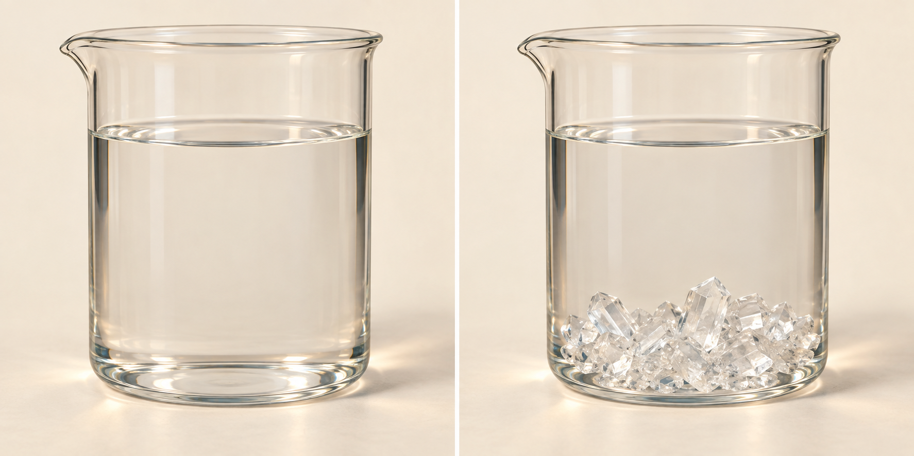
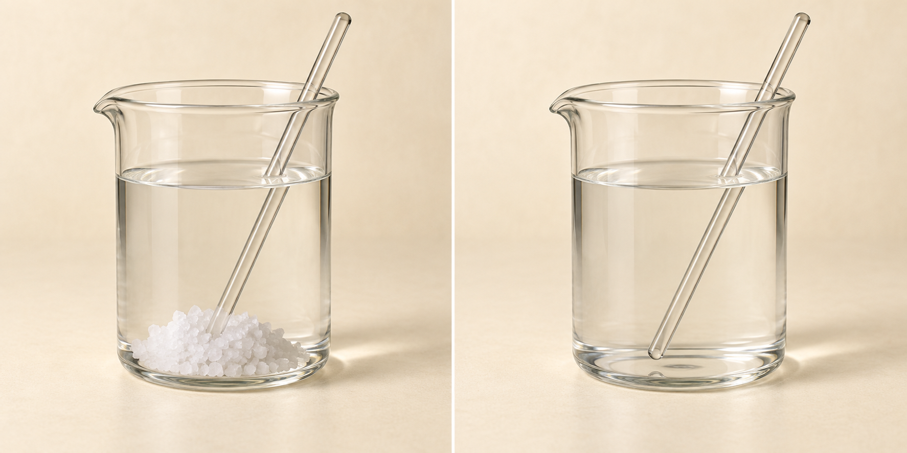
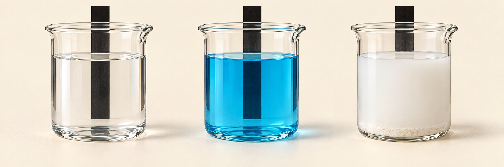
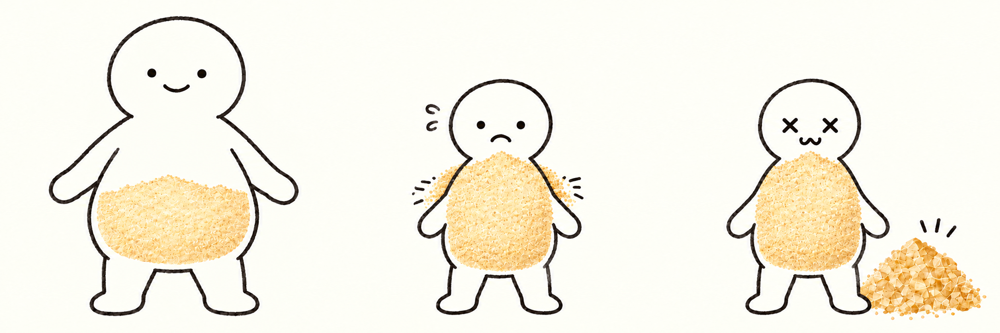
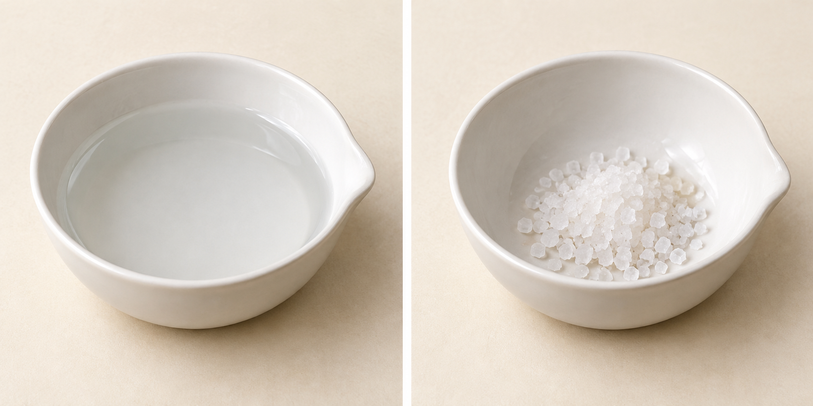

中1 理科・化学
水溶液

水に入れて、かき混ぜる
食塩は、どこへいった？

見えなくなっても、なくなっていない
水90 gに、食塩10 gを溶かす
溶かした後の質量は？
水溶液全体：100 g
水90 g ＋ 食塩10 g
食塩水100 g
覚えること
溶質・溶媒・溶液
溶媒が水の溶液を、水溶液という
覚えること
水溶液の性質
向こう側が透けて見えるか
色があっても、透明

食塩水
無色・透明
硫酸銅水溶液
青色・透明
小麦粉と水
白くにごる
透明 ＝ 無色、ではない
どちらも食塩水100 g
どちらが濃い？
水溶液全体：100 g
水溶液全体：100 g
食塩が20 gの方
砂糖27 g ＋ 水73 g
基準にするのは、水溶液全体
水溶液全体：100 g
砂糖27 g ／ 水溶液100 g
全体100 gのうち、27 gが砂糖
割合の表し方
0.27と27％は、同じ割合
27 / 100
＝ 0.27
＝ 27％
同じ割合を、100 gあたりに
全体200 gのうち、砂糖54 g
54 ÷ 200 ＝ 0.27 ＝ 27％
覚えること
質量パーセント濃度
溶質の質量 ÷ 水溶液の質量
0.1＝10％ 0.05＝5％ 0.27＝27％
濃度の確認①
食塩10 gを、水90 gに溶かした
水溶液全体：100 g
全体は何 g？
10 ＋ 90 ＝ 100 g
10 ÷ 100 ＝ 0.1 ＝ 10％
濃度の確認②
食塩10 gを、水190 gに溶かした
水溶液全体：200 g
10 ＋ 190 ＝ 200 g
10 ÷ 200 ＝ 0.05 ＝ 5％
濃度の確認③
15％の砂糖水を、200 g作る
15％ ＝ 0.15
砂糖：200 × 0.15 ＝ 30 g
水：200 − 30 ＝ 170 g
砂糖30 gと、水170 g
20％の食塩水100 gに、水100 gを加える
水を加えると、何が変わる？
水溶液全体：100 g
水溶液全体：200 g
20 ÷ 200 ＝ 0.1 ＝ 10％
同じ温度・同じ水の量
いつまでも、溶け続ける？
覚えること
飽和水溶液と溶解度
基準は「水100 g」
説明用の物質A（仮想データ）
温度が変わると、限界も変わる
| 温度 | 水100 gに溶ける最大量 |
|---|---|
| 60℃ | 80 g |
| 40℃ | 40 g |
| 20℃ | 20 g |
説明用の物質A・水100 g（仮想データ）
キャパくんの「入る量」

＝ 溶ける量の限界
＝ 実際に溶けている量
物質A・60℃・水100 g（説明用）
まだ、半分しか使っていない
最初は、満杯ではない
物質A・60℃から20℃へ・水100 g（説明用）
温度を下げたら……
入る量の限界は20 gに
入りきらない分は、どうなる？
物質A・20℃・水100 g（説明用）
外に結晶が出ても、お腹は満杯
40 − 20 ＝ 20 g
物質A・60℃から20℃へ・水100 g（説明用）
実際の水溶液では、結晶が出てくる
結晶は、ビーカーの中に残る
覚えること
再結晶
再び結晶として取り出す
物質A・水100 g（説明用）
引くのは、実際に溶けていた量から
| 冷やす前に溶けていた量 | 冷やした後も溶けていられる量 |
|---|---|
| 40 g | 20 g |
40 − 20 ＝ 20 g
80 gは「最大量」。入れた量ではない
物質A・60℃から20℃へ・水100 g（説明用）
60 g溶けていたら、何 g出る？
| 初めに溶けた量 | 20℃で溶ける限界 |
|---|---|
| 60 g | 20 g |
60 − 20
40 gの結晶
物質A・60℃から20℃へ（説明用）
水が50 gなら？
| 水の量 | 20℃で溶ける限界 |
|---|---|
| 100 g | 20 g |
| 50 g | 10 g |
初めに30 g溶かした → 30 − 10
20 gの結晶
物質A・60℃から20℃へ・水100 g（説明用）
冷やせば、必ず結晶が出る？
| 初めに溶けた量 | 20℃で溶ける限界 |
|---|---|
| 10 g | 20 g |
結晶は出ない
冷やしても、溶解度の変化が小さい物質
食塩は、水を蒸発させて取り出す

水が減ると、溶けていられる量も減る
最後に整理
濃度と溶解度では、基準が違う
| 質量パーセント濃度 | 溶解度 |
|---|---|
| 水溶液全体に対する、溶質の割合 | 水100 gに溶ける、最大の質量 |
| 0.27 ＝ 27％ | 温度と物質によって決まる |
全体の割合か、溶かせる限界か
水溶液のまとめ
溶ける量には、限界がある
実際に溶けた量と、溶ける限界を分けよう